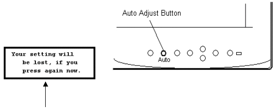
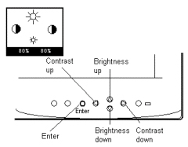

Operating Documentation
Direction 5440001-3, Rev# 6
Signa HDxt Service Methods
Module Version 1.0, Version Date 5/3/07
Operating Documentation |
| Required Persons | Preliminary Reqs | Procedure | Finalization |
|---|---|---|---|
| 1 |
This section should get you familiar with the basic operation of the monitor controls. The intent of this section is to adjust the monitor to a "default" condition to proceed with calibrations. It also will allow you to become familiar with the button panels and the Screen Manger setup.
With the monitor ON, press the Auto Adjust Button.
Illustration 1: AUTO ADJUST BUTTON

While the message is on the screen (within 5 seconds), press the Auto Adjust Button again to automatically center the screen.
Press the Contrast up button. Set to 80%.
Press the Brightness up button. Set to 80%.
Illustration 2: ADJUSTMENT

Press the Enter Button. All adjustments are now saved. When Auto Adjust button is pushed, the LCD will return to these settings. These settings will remain in effect even if power is removed, or system software is re-booted. Unless manually changed by the operator in the Screen Manager.
For further information, of the Screen Manager and button identification, refer to Appendix A. You may also review the EIZO User's Manual that came with the LCD Display.
The LCD Display Monitor is now ready for calibration.
No finalization steps.